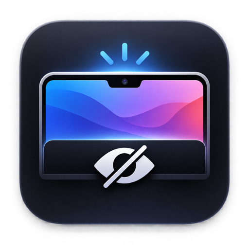

Notch Hider · How it works
The notch, blended into black
A strip window sits just under the macOS menu bar on every notched screen and paints it true black or frosted glass, so the notch disappears into it.
Black: every strip pixel is exactly RGB 0, so the notch vanishes.
From setting to pixel
01
Triggers
Settings windowStyle, strength, corners, login, icon
Menu bar iconHide Notch toggle, Settings, Quit
System eventsDisplays, Spaces, wake: rebuild
02
Notch Hider
Settings store
BarSettings in UserDefaults
Launch at login
SMAppService to Login Items
Single instanceReopening the app shows Settings
03
Strip per screen
Notched screens only
safeAreaInsets.top > 0, menu bar height
Under the menu barWindow level: menu bar − 1
Click-throughOn every Space, never steals focus
04
Paint
Black
BarView fills RGB 0, 0, 0
Blurred glassBehind-window blur, 1–100%
Round cornersBottom corners, 0–20 pt
Result, verified
Menu bar drawn on top
Menus and status icons stay fully usable. The strip only changes what's behind them, so the notch blends in.
0.0
Every visible black pixel, captured live as 16-bit float
25
Unit tests: geometry, settings, rendering, styles
2
Live checks: at launch and while restyling